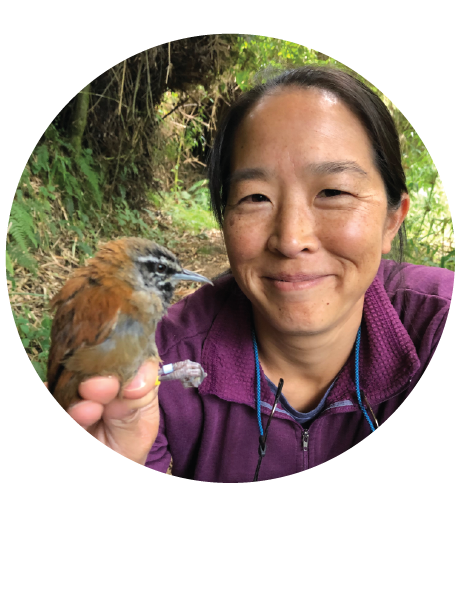

Lauren ChanAssociate ProfessorCurrent: Pacific University Email: lchan at pacificu dot edu Starting Fall 2023: Cal Poly San Luis Obispo Email: chanlm at calpoly dot edu |
 |
My research focuses on the evolution and conservation of biodiversity. I work with a lot of different taxa, but have a particular fondness for amphibians and reptiles. My projects generally use genomic data to characterize patterns of diversity in wild populations and understand the processes responsible for those patterns. Work in the lab involves fieldwork, molecular benchwork, as well as computational analyses.
Mid-2023, I will be moving to Cal Poly San Luis Obispo where I will be an Associate Professor in the Biological Sciences Department. I will very likely be accepting Master's students to start at Cal Poly SLO Fall 2023. If you are interested in joining my lab, please get in touch via email!
Opportunities to Get Involved!
I'm always interested in collaborating with excited, motivated students on research projects. If you want to learn more about the different research projects in the lab, first check out the research page and then email me or stop by my office. Opportunities at Pacific University range from joining us in fieldwork, collaborating on independent projects, to doing research with me in my Advanced Research Methods course.